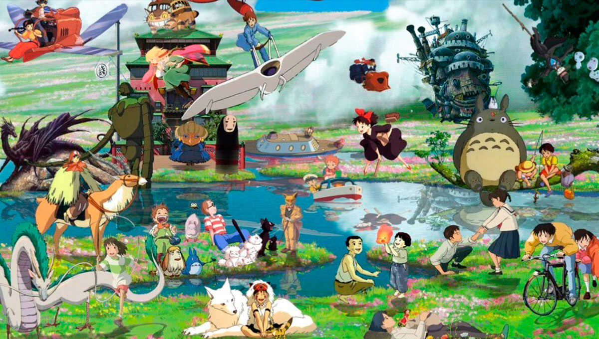

CONOCIENDO STUDIO GHIBLI
Studio Ghibli (スタジオジブリ Sutajio Jiburi?) es un estudio de animación japonés, con sede en Tokio. Fue fundada en 1985 por Hayao Miyazaki y Isao Takahata, y a día de hoy, han realizado más de 20 películas, además de otras clases de trabajos (cortometrajes, anuncios publicitarios, ...). Tienen el respeto del público japonés y también el internacional, donde la crítica y el sector de la animación le presenta muchos respetos. Debido a su popularidad, se abrió el Museo Ghibli, el cual se encuentra a las afueras de Tokio y para el 2022 se espera tener listo el Ghibli Park[1]. Fuente:https://studioghibli.fandom.com/es/wiki/Studio_Ghibli